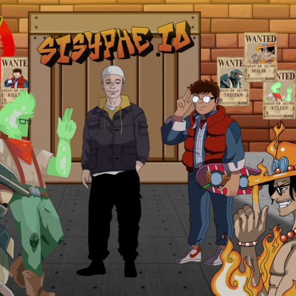
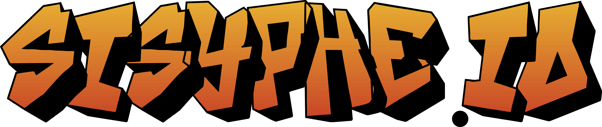
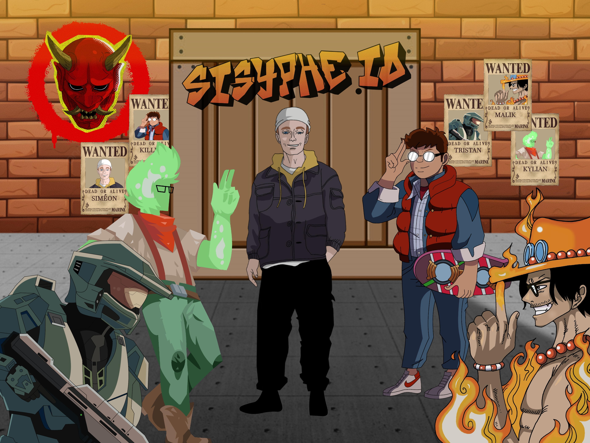

history_edu
Origine & Inspiration mythologique
Inspiré par le châtiment mythologique du roi Sisyphe, condamné à pousser éternellement un rocher au sommet d'une colline,
Sisyphe.io modernise le concept historique du casse-tête Sokoban.
Le joueur incarne Sisyphe et doit acheminer d'imposants blocs jusqu'à des stèles d'activation sacrées. Au-delà du simple puzzle mécanique, le projet intègre des dynamiques novatrices : interactions d'éléments physiques (glace, dalles de téléportation, interrupteurs sensibles), système de rembobinage temporel, et une ambiance rétro soignée.
Présenté lors de l'édition 2024 des Trophées NSI (Numérique et Sciences Informatiques), le projet a remporté le 1er Prix du Jury Académique, distingué pour l'excellence de son code, son originalité artistique et son exhaustivité documentaire.
sports_esports
Fonctionnalités & Conception
code
Lead Developer
Coordination technique de l'équipe de 5 développeurs. Structuration de la boucle de jeu Pygame, gestion des états (menus, niveaux, pause) et optimisation du framerate (60 FPS constants).
palette
Pixel Artist & Game Designer
Création intégrale de l'identité graphique : sprite sheets d'animation de Sisyphe, tilesets des blocs et des sols, illustrations de décors monumentaux et titrage rétro.
grid_view
Éditeur de niveaux intégré
Développement d'un éditeur dédié en Tkinter/Python permettant à tout joueur de concevoir, tester et exporter ses propres énigmes au format JSON.
translate
Moteur Multilingue
Système d'internationalisation dynamique avec dictionnaires JSON gérant 10 langues (Français, Anglais, Espagnol, Russe, Chinois, Japonais, Arabe, etc.).
photo_library
Galerie d'illustrations & Pixel Art

Personnage Sisyphe — Pixel Art
fullscreen

Écran d'accueil & Typographie
fullscreen

Décors panoramiques de l'Olympe
fullscreen
terminal
Extraits de code & Moteur physique
Le cœur du moteur gère la détection de collision matricielle, l'inertie des blocs poussés et l'historique d'actions pour permettre l'annulation (`Undo / Redo`) en temps constant.
# Extrait de la logique de déplacement d'un rocher dans la matrice
def tenter_deplacement(grille, position_joueur, direction):
dx, dy = direction
x, y = position_joueur
nx, ny = x + dx, y + dy
# Vérification des bordures de la carte
if not (0 <= nx < len(grille[0]) and 0 <= ny < len(grille)):
return False, position_joueur
cible = grille[ny][nx]
# Déplacement libre si case vide ou dalle d'activation
if cible in [CASE_VIDE, CIBLE_ACTIVATION]:
return True, (nx, ny)
# Poussée d'un rocher (Sokoban)
if cible in [ROCHER_CLASSIQUE, ROCHER_LOURD]:
nnx, nny = nx + dx, ny + dy
if 0 <= nnx < len(grille[0]) and 0 <= nny < len(grille):
destination_rocher = grille[nny][nnx]
if destination_rocher in [CASE_VIDE, CIBLE_ACTIVATION]:
# Déplacement atomique du rocher
grille[nny][nnx] = ROCHER_CLASSIQUE
grille[ny][nx] = CASE_VIDE
return True, (nx, ny)
return False, position_joueur
military_tech
Bilan & Reconnaissance
Ce projet a constitué une étape fondamentale dans mon parcours de développeur :
- Gestion de projet d'équipe : Attribution des rôles, réunions de synchronisation, gestion des versions sous Git et respect d'un calendrier strict de livraison.
- Rigueur documentaire : Rédaction d'un dossier technique complet de plus de 40 pages détaillant l'architecture, les diagrammes de classes et les algorithmes de résolution.
- Reconnaissance officielle : Élu meilleur projet académique de l'académie de Limoges par le jury des Trophées NSI.